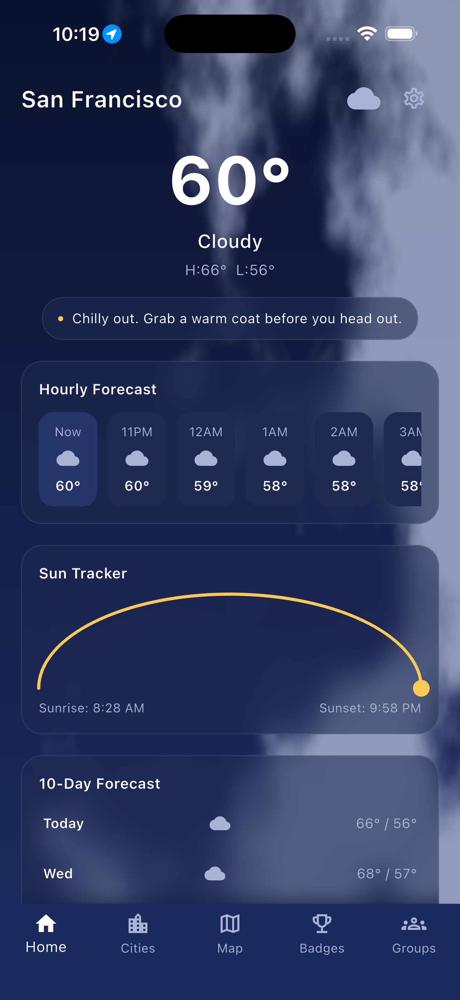
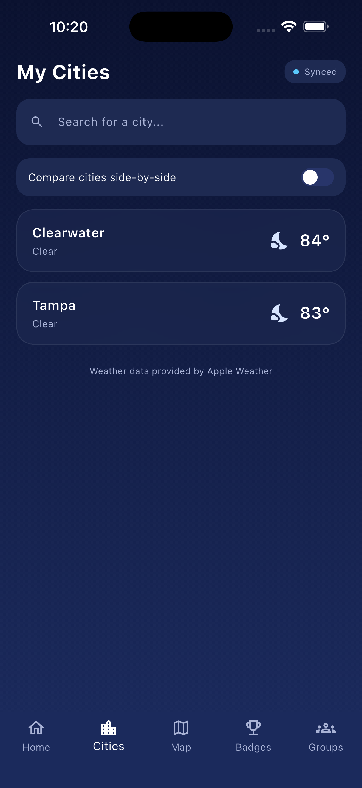
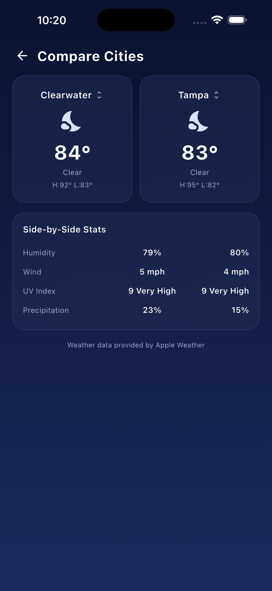
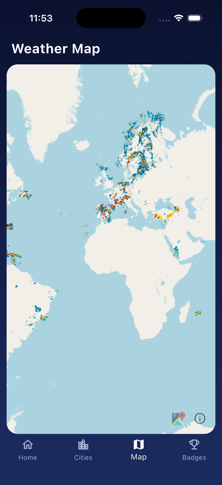
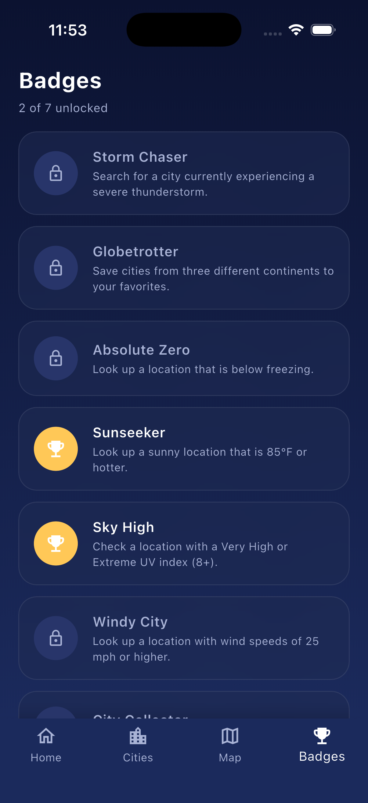

Weather that feels alive. Real-time animated conditions, saved cities that sync everywhere, and a global radar map - all in one clean, dark-mode dashboard.





Automatically shows live weather for wherever you are, the moment you open the app.
Rain, snow, storms, and clear skies rendered as full-screen animated conditions - not static icons.
A scrollable hourly outlook plus a 5-day forecast, with a fluid animated transition into each day's detail.
Save favorite cities and see them update live across every device you're signed into.
Compare two cities at once - temperature, humidity, wind, UV index, and precipitation chance.
An interactive global map with real-time precipitation radar layered on top.
Unlock badges for chasing storms, collecting cities across continents, and more.
A sunrise-to-sunset tracker and quick outfit recommendations based on current conditions.
Questions, feedback, or need help with your account? Visit our support page or email tempraweatherapp@outlook.com.